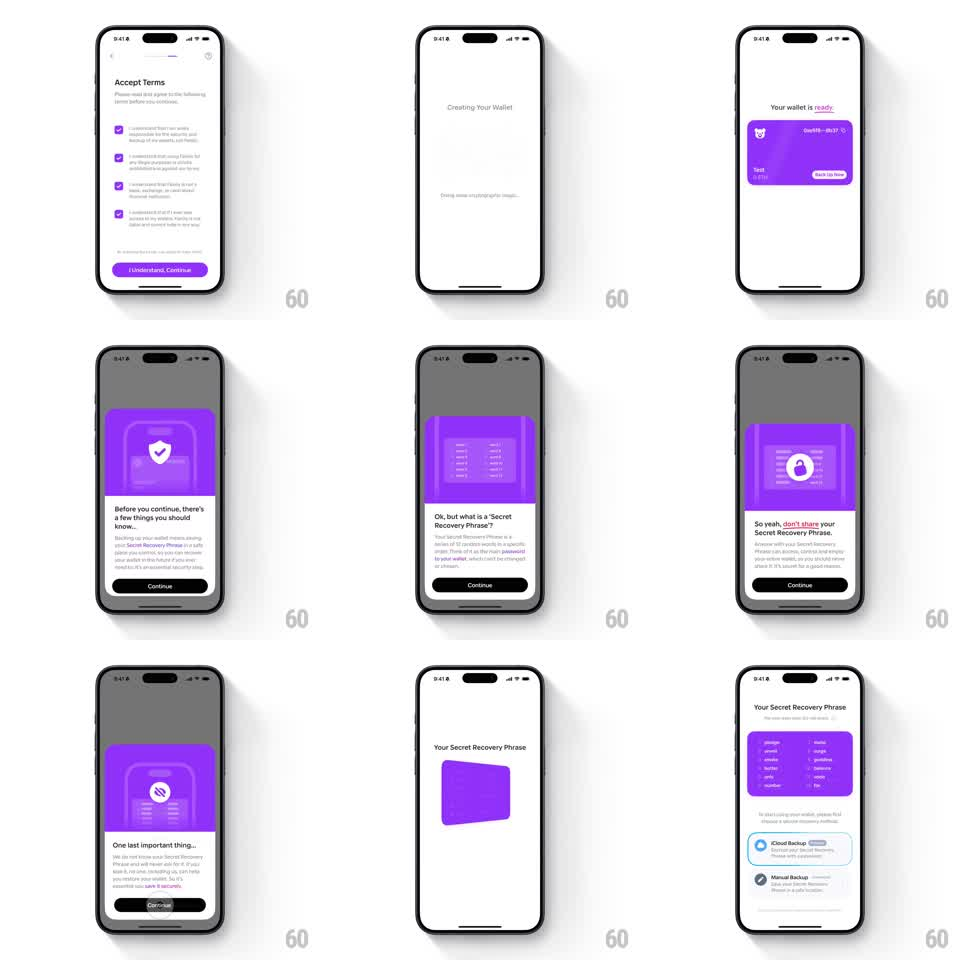

Media
Frame-by-frame

Rebuild this interaction 1:1: Family's wallet creation onboarding - from "Accept Terms" (four purple checkboxes, "I Understand, Continue") through a "Creating Your Wallet" interstitial to "Your wallet is ready" (purple card), then a sequence of purple-art education sheets ("Before you continue...", "Ok, but what is a 'Secret Recovery Phrase'?", "So yeah, don't share...", "One last important thing...") ending on the 12-word "Your Secret Recovery Phrase" reveal with iCloud / Manual Backup choices.

Rebuild this interaction 1:1: Family's wallet creation onboarding - from "Accept Terms" (four purple checkboxes, "I Understand, Continue") through a "Creating Your Wallet" interstitial to "Your wallet is ready" (purple card), then a sequence of purple-art education sheets ("Before you continue...", "Ok, but what is a 'Secret Recovery Phrase'?", "So yeah, don't share...", "One last important thing...") ending on the 12-word "Your Secret Recovery Phrase" reveal with iCloud / Manual Backup choices.
## Integration
Integration: stack-agnostic spec - springs given as stiffness/damping, timed motions as duration + curve; map every value to your framework and animation library of choice.
## Scene
Light flow, purple brand. Screens: "Accept Terms" (4 checked checkbox rows, purple "I Understand, Continue"); "Creating Your Wallet" ("Doing some cryptographic magic..." spinner beat); "Your wallet is ready" (purple wallet card "test / 0 ETH / 0x6119...8b37", "Save On Device" tag); three education sheets with purple art blocks (shield, word list, lock, eye-off) and black Continue; "Your Secret Recovery Phrase" (purple card with 12 numbered words, "iCloud Backup" recommended option, "Manual Backup" with warning glyph).
## Motion spec
Pattern: staggered sheet sequence with a 3D card flip.
- Checkboxes: each tap pops the check (scale 1 -> 1.15 -> 1, spring ~340/14, purple fill 150ms); Continue enables only when all four are checked (gray -> purple, 200ms).
- Continue: the sheet slides up (spring ~300/20); the creating interstitial crossfades in (200ms) with its status text shimmering (opacity loop 1s).
- Ready: the purple wallet card flips in (rotateY 90 -> 0, 500ms, ease-out) with a shadow sweep, the title fading above it.
- Education sheets: each Continue pushes the next sheet (slide left, 300ms); the purple art block flips between illustrations (rotateY, 400ms) while body text staggers in (50ms lines).
- The phrase reveal: the word card scales in (0.9 -> 1, spring ~320/18) and the 12 words cascade (30ms each, opacity + 4pt rise); backup options slide up last (200ms).
## Calibration
- Purple is the only brand color; Continue buttons are black on the education sheets, purple on terms.
- The 3D flips are reserved for the art/card surfaces.
## Reduced motion
All screens crossfade (250ms); no flips or cascades.
## Don't miss
- "iCloud Backup" carries a "Recommended" treatment over "Manual Backup".
- The wallet card's address (0x6119...8b37) and "0 ETH" show on the ready beat.